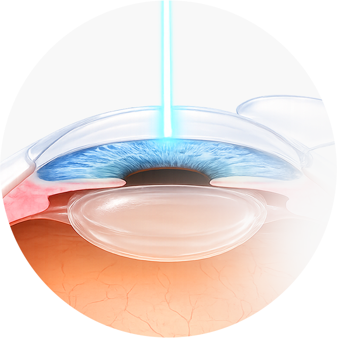
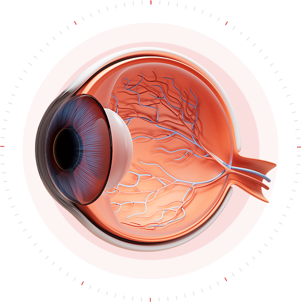
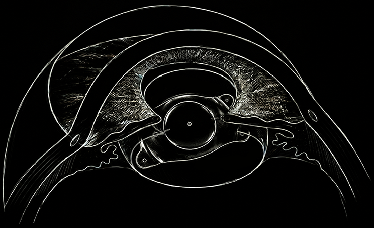
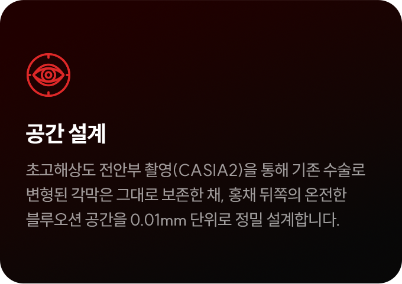
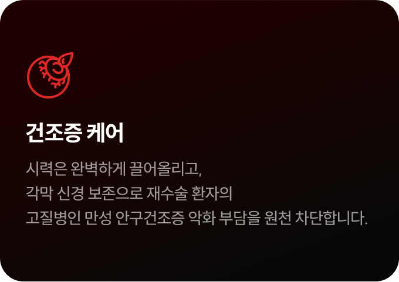
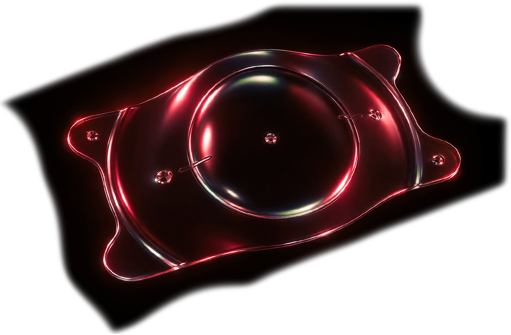

근시 퇴행과 재수술 불가 판정의 상실감. 퍼스트안과는 변형된 각막을 건드리지 않는
저자극 ICL 프로토콜로, 다시 안심할 수 있는 선명함을 완성합니다.
근시 퇴행과 재수술 불가 판정의 상실감. 퍼스트안과는 변형된 각막을 건드리지 않는
저자극 ICL 프로토콜로, 다시 안심할 수 있는 선명함을 완성합니다.
평생의 시력을 맡기는 선택, 그 무게를 누구보다 잘 아는
퍼스트안과가 끝까지 함께하겠습니다.

다시 나빠진 눈,
그리고 잔여 각막 부족이라는
냉혹한 한계
큰 비용과 통증을 감수하며 받았던 라식·라섹 수술 후
시간이 지나 시력이 다시 떨어지는 ‘근시 퇴행’이 찾아왔을 때의
상실감은 이루 말할 수 없습니다. 다시 안경을 쓰자니 억울하고,
재수술을 하자니 이미 한 번 손댄 눈에 또 레이저를 대는 것이
두렵습니다.
게다가 대부분은 잔여 각막이 부족해 레이저 재수술 불가 판정을
받습니다. 이미 1차 레이저 수술을 경험한 눈은 각막 지형도가
불규칙하게 변형되어 있고 각막 두께 또한 얇아진 한계 상태입니다.
근시 퇴행을 겪고 있는 환자들의 안구 상태를 정밀 검사해 보면,
대부분 과거 수술의 여파로 심각한 안구건조증을 동반하고 있어
눈이 늘 뻑뻑하고 피로한 상태입니다.
이 상태에서 또 라섹으로 각막을 깎아내면
안구 건조증은 상상을 초월할 정도로 악화되어,
시력은 좋아질지 몰라도 눈을 제대로 뜨지 못하는
또 다른 고통에 시달릴 수 있습니다.

고도난시 교정으로 인해
각막 모양이 변형된 경우
잔여각막 두께가
안전기준 이하인 경우
라식으로 각막 절삭 후
각막 중심부가 얇아지고
평평해진 경우
각막표면이 매끄럽지 않고
안구건조증이 심한 경우
다시 나빠진 눈, 이미 얇아진 한계 각막에
또다시 레이저를 댈 수는 없습니다.




원인 분석을 넘어선 공간 입체 계측
단순 퇴행 판별을 넘어,7,000례 고도근시 데이터의 확신
이미 한 차례 상처 입고 한계에 도달한 눈은 집도의의 숙련도가